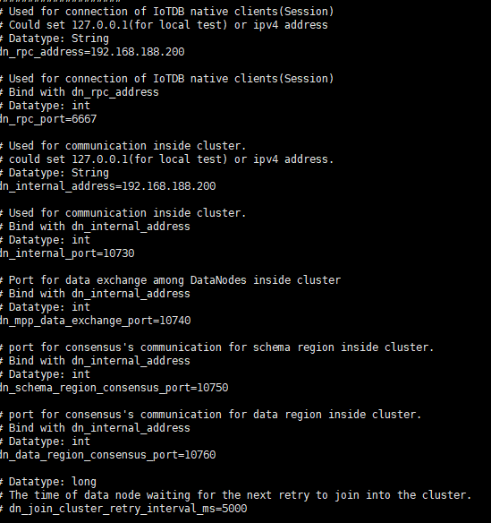

IOTDB 安装 windows 发行版本 | IoTDB Website (apache.org) 进行下载
检查java环境
简单打开方式
打开成功
命令行启动
关闭
启动客户端
linux
进行解压
启动
通过jps命令查看是否启动
启动客户端
关闭两种方法
资源配置
设置系统最大打开文件数为 65535，以避免出现 “太多的打开文件 “的错误。
1 2 3 4 5 6 7 8 9 # 查看当前限制 ulimit -n # 临时修改 ulimit -n 65535 # 永久修改 echo "* soft nofile 65535" >> /etc/security/limits.conf echo "* hard nofile 65535" >> /etc/security/limits.conf # 退出当前终端会话后查看，预期显示65535 ulimit -n
修改ip，端口号，可让windows去访问linux上的iotdb
修改iotdb-datanode.properties
更换ip地址为本机的固定ip，记得关闭防火墙，但实际开发需配置规则而不是关闭防火墙
远程连接成功
快速上手案例 大部分应用场景都是已如下树状结构进行抽象及构造
进行建模
创建数据库
1 2 create database root.yaozaifactoryshow databases
（为什么加root，因为结构为树状，工厂上方还有一个root根节点）
创建成功后，创建时间序列，名称则为从工厂一直向下命名确定每个传感器的起点
1 2 3 4 create timeseries root.yaozaifactory.chejian1.oven.temp double create timeseries root.yaozaifactory.chejian1.oven.humidity double create timeseries root.yaozaifactory.chejian1.pool.ph double create timeseries root.yaozaifactory.chejian1.pool.temp double
每个时间序列为空，现在向时间序列插入数据
1 2 3 4 insert into root.yaozaifactory.chejian1.oven (timestamp ,temp) values (100 ,15.1 );insert into root.yaozaifactory.chejian1.oven (timestamp ,temp) values (101 ,18.2 );insert into root.yaozaifactory.chejian1.pool (timestamp ,ph,temp) values (102 ,7 ,35.5 );insert into root.yaozaifactory.chejian1.pool(timestamp ,ph,temp)values (2024 -09 -12 08 :00 :00 ,7 ,35.5 );
long类型表现的时间戳为1970年1月1日00:00:00以来的毫秒数，100则为这个时间加100ms
命名类型，前面随便，最后两个分别为设备和传感器（测点）
插入后进行查询：
1 2 select * from root.yaozaifactory.chejian1.ovenselect ph,temp from root.yaozaifactory.chejian1.pool
集群安装
集群由3个confignode和3个datanode组成（经典3C3D集群,相比于1C多D的情况，3C3D不会因为一个config节点宕机而出现data节点之间不可用的情况，C只能为奇数个，否则无法选举出leader），前面单个启动只启动一个confignode和一个datanode
现在已经启动了3个虚拟机，分别命名为1，2，3，如下所示
对1号机进行如下修改，1号机作为种子节点 (所有的ConfigNode通过该cn_seed_config_node加入集群)：
补充：
引导新加入的节点进入IoTDB集群:
种子节点为新加入的节点提供集群信息,帮助它们快速发现和加入集群。
维护集群元数据:
种子节点负责维护集群的元数据信息,如集群拓扑结构、节点列表等,为其他节点提供元数据查询。
协调集群内部通信:
种子节点负责协调集群内部各节点之间的通信,确保集群内部数据、元数据的一致性。
负载均衡:
种子节点会根据集群负载情况,动态调整数据分布和任务分配,实现集群资源的合理利用。
故障切换:
当主种子节点出现故障时,备用种子节点可以快速接管,确保集群的高可用性。
对iotdb-confignode.properties进行修改：
对iotdb-datanode.properties进行修改：

2,3号机进行类似的修改，种子结点修改为1号机的ip地址
集群启动 启动顺序
启动种子 ConfigNode
增加 ConfigNode（可选）
增加 DataNode
1 ./sbin/start-confignode.sh
启动2号confignode
启动3号confignode
启动1号机datanode
windows使用cli客户端连接集群，查看状态
在启动3号机datanode
现在也可通过32号机连接集群
集群删除节点 两种方法
1 2 sbin/remove-confignode.sh 127.0.0.1:10710 sbin/remove-confignode.sh 2
删除datanode同理
数据模型
数据模型（Data Model）是数据特征的抽象，它从抽象层次上描述了系统的静态特征、动态行为和约束条件，为数据库系统的信息表示与操作提供一个抽象的框架。-百科
数据模型是一个描述数据、数据联系、数据定义 以及一致性约束的概念工具的集和。数据模型提供了一种描述物理层、逻辑层以及视图层 数据库设计的方式。-数据库系统概念
各层概念
物理层，描述数据在磁盘上的存储，比如一些传感器的时序数据被存在连续的磁盘快上。
逻辑层，描述数据库中存储什么数据，以及数据间的关系。程序设计人员，数据库管理人员
逻辑层，高层次的抽象，描述数据库的某个部分，数据库用户看到的部分。
数据建模
1 2 3 4 5 6 7 8 9 10 11 12 13 / / 创建数据库create database root.yaozaifactory/ / 创建时间序列create timeseries root.yaozaifactory.chejian1.oven.temp double create timeseries root.yaozaifactory.chejian1.oven.humidity double create timeseries root.yaozaifactory.chejian1.pool.ph double create timeseries root.yaozaifactory.chejian1.pool.temp double create timeseries root.yaozaifactory.chejian1.elec.ph double create timeseries root.yaozaifactory.chejian1.elec.temp double create timeseries root.yaozaifactory.chejian2.pump.ph double create timeseries root.yaozaifactory.chejian2.pump.temp double create timeseries root.yaozaifactory.chejian2.comp.ph double create timeseries root.yaozaifactory.chejian2.comp.temp double
不需要复杂的er图模型
基本概念 数据库database
在构建数据模型时，一个数据库中的数据可能属于同一个业主，或者同一个制造商
不同 database 的数据会存储在磁盘的不同文件夹下，从而实现物理隔离
通常习惯按照工厂，车间，生产班组……等分类存储数据
设备 Device
抽象概念，但通常建模时对应某个具体的设备或者数据采集装置
设备（或者称为，实体）是管理的一组时间序列的组合，可以是一个物理设备、测量装置、传感器集合等
所有的（传感器）物理量都有，且必须有其对应的归属实体（设备）
温度也可以拆分为各个小组，如上图
物理量Measurement（叶子结点） 在工厂、工业环境下，一般指传感器(sensor)，通常一种物理量都对应一个传感器称工况或字段（field），是在实际场景中检测装置所记录的测量信息，且可以按一定规律变换成为电信号或其他所需形式的信息输出
时间序列（Timeseries）（该数据结点在当前时间戳下的集合）
一个物理设备（实体）的某个传感器（物理量）在时间轴上的记录，是数据点的序列。
root.yaozaifactory.chejian1.oven.temp
包含多个数据点（Data Point）
数据点，包括 一个“时间戳-值”对，例如（2024-04-18 12:00:00, 7.9）
对齐时间序列（Aligned Timeseries）
存在某些实体的多个物理量同时采样
包含多个数据点
按时间对其的数据点，包括 一个“时间戳-值-值-值-值-值-……”对
1 create aligned timeseries root.yaozaifactory.chejian2.pump(press float ,pinlv float )
将设备时间对齐，而不是将压力和频率两个物理量对齐
基本数据类型 数据类型
BOOLEAN（布尔值）
INT32（整型）
INT64（长整型）
FLOAT（单精度浮点数）
DOUBLE（双精度浮点数）
TEXT（字符串）
1 2 3 4 5 6 创建double 类型的时间序列 create timeseries root.yaozaifactory.chejian1.oven.temp double 创建int32类型的时间序列 create timeseries root.yaozaifactory.chejian2.compressor.press int32创建text类型 create timeseries root.yaozaifactory.chejian2.compressor.mess text
1 insert into root.yaozaifactory.chejian1.oven (time , temp) values (2024 -04 -25 16 :00 :00 ,15.14 )
时间类型
Long类时间戳（timestamp）是表示时间的量，它可以是相对于某个参考点的时间差。在计算机领域，最常见的参考点是Unix纪元，即1970年1月1日0点0分0秒开始。
在 IOTDB当中以北京时间为起点1970年1月1日8点0分0秒，从那一刻起，计算机系统会计算经过的毫秒，这个数值就是所谓的时间戳。
以基准时间加103毫秒
DATETIME-INPUT 类型类时间戳手动指定插入的时间
1 2 3 insert into root.yaozaifactory.chejian1.oven(timestamp ,temp) values (2024 -03 -10 12 :12 :12 ,18.2 );insert into root.yaozaifactory.chejian1.oven(timestamp ,temp) values (2024 / 03 / 10 12 :13 :12 ,18.2 );insert into root.yaozaifactory.chejian1.oven(timestamp ,temp) values (2024 -03 -10 T12:15 :12 ,18.2 );
相对时间插入
1 2 insert into root.yaozaifactory.chejian1.oven(timestamp ,temp) values (now() - 1 m,19.2 ); / / 1 m为向前1 分种insert into root.yaozaifactory.chejian1.oven(timestamp ,temp)values (2024 -03 -10 T12:15 :12 -1 h,19.2 );
编码和压缩 什么是编码
数据编码指的是将原始数据转换为一种特定的格式或语言
编码提高数据的存储效率，需要在数据写入的过程中对数据进行编码，从而减少磁盘空间的使用量。
我们使用的时候，只需要根据数据的变化趋势和数据类型，进行选择想要的编码方式
我的理解：通过简单的数据格式描述复杂的原始数据
例如差分编码
一个序列，需要进行传输 ：1, 2, 3, 2, 1
第一个数字是1，没有前一个数字，所以我们传输1。
第二个数字是2，与前一个数字1相比，差异是1，所以我们传输1。n 第三个数字是3，与前一个数字2相比，差异是1，所以我们传输1。
第四个数字是2，与前一个数字3相比，差异是-1，所以在传输时我们考虑符号，传输-1。n 第五个数字是1，与前一个数字2相比，差异是-1，所以在传输时我们考虑符号，传输-1。
我们写入的时候，经过计算，序列将是：1, 1, 1, -1, -1；查询的时候，再通过计算还原
编码属于用计算时间换存储空间
iotdb支持的编码格式（了解）
PLAIN 编码（PLAIN）默认的编码方式，即不编码
二阶差分编码（TS_2DIFF）比较适合编码单调递增或者递减的序列数据
游程编码（RLE）比较适合存储某些数值连续出现的序列
GORILLA 编码（GORILLA）GORILLA 编码是一种无损编码，它比较适合编码前后值比较接近的数值序列，不适合编码前后波动较大的数据。
1 create timeseries root.yaozaifactory.chejian1.oven.temp3 withdatatype = double , encoding = RLE
数据类型
支持的编码
BOOLEAN
PLAIN, RLE
INT32
PLAIN, RLE, TS_2DIFF, GORILLA, FREQ, ZIGZAG
INT64
PLAIN, RLE, TS_2DIFF, GORILLA, FREQ, ZIGZAG
FLOAT
PLAIN, RLE, TS_2DIFF, GORILLA, FREQ
DOUBLE
PLAIN, RLE, TS_2DIFF, GORILLA, FREQ
TEXT
PLAIN, DICTIONARY
什么是压缩
数据压缩，主要是减少冗余信息，只传输必要的数据。有损压缩通过牺牲一些数据质量来实现更高的压缩率，而无损压缩则保持原始数据的完整性和质量。
我的理解：通过简化记录少量的信息去描述更多的信息。
用户可以制定数据存储时采用的压缩方法。
iotdb支持的压缩模式（了解）（主要因为对压缩底层算法不了解）
UNCOMPRESSED（不压缩）
SNAPPY 压缩
LZ4 压缩，系统默认为我们选择这个
GZIP 压缩
ZSTD 压缩
LZMA2 压缩
1 create timeseries root.yaozaifactory.chejian1.oven.temp4 withdatatype = double , encoding = RLE , compressor = snappy
数据分区
一个数据库Database，系统为每个Database分配1万个分区槽，并向上图类似按照时间划分多个时间槽，并按一定规则进行分组，再进行复制落到datanode上
数据定义语言DDL 场景引入
创建概念数据模型
创建数据库
1 2 3 create database root.sh / / 上海施工基地create database root.qd / / 青岛施工基地show databases
查看数据库与属性
TTL time to live
IoTDB 可以定期、自动地删除一定时间之前的数据，指定毫秒数，只能设置在数据库上
1 2 3 4 / / 每隔一天就会删除set ttl to root.sh 3600000 / / 取消配置unset ttl to root.sh
修改配置
1 2 3 4 CREATE DATABASE root.sh2 WITH SCHEMA_REPLICATION_FACTOR= 2 , DATA_REPLICATION_FACTOR= 3 , SCHEMA_REGION_GROUP_NUM= 3 , DATA_REGION_GROUP_NUM= 3 ;alter database root.sh2 with schema_region_group_num= 4 ,data_region_group_num= 4 show databases detalis
删除数据库
1 delete DATABASE root.sh2
时间序列操作 1 2 3 4 5 6 7 8 9 10 11 12 13 create timeseries root.sh.jiading.tbm11_1.speed double create timeseries root.sh.jiading.tbm11_1.tor with datatype = float , encoding = plaincreate timeseries root.sh.jiading.tbm11_1.dist with datatype = float , encoding = plaincreate timeseries root.sh.jiading.tbm11_2.speed with datatype = double create timeseries root.sh.jiading.tbm11_2.tor with datatype = double , encoding = rlecreate timeseries root.sh.jiading.tbm11_2.dist with datatype = float , encoding = plain, compressor = gzip/ / 可以省略with ，空格分开create timeseries root.sh.pudong.tbm3.speed double create timeseries root.sh.pudong.tbm3.speed double encoding = plaincreate timeseries root.sh.pudong.tbm3.dist float encoding = plain compressor = gzip
创建对齐的时间序列
1 2 3 create aligned timeseries root.sh.pudong.tbm4 (speed float , tor float , dist double )create aligned timeseries root.sh.pudong.tbm5 (speed float encoding = plain compressor = gzip, tor float encoding = plain, dist double )
删除时间序列
1 delete timeseries root.sh.pudong.tbm4.speed
查看时间序列
1 2 3 4 5 6 7 8 9 10 show timeseries/ / 查看指定路径下show timeseries root.sh.* * show timeseries root.sh.jiading.* * / / 带过滤条件的查询show timeseries where timeseries contains “tor”show timeseries root.sh.* * where timeseries contains 'speed' show timeseries root.sh.* * where datatype= FLOAT
时间序列数量统计
1 2 3 count timeseries root.* * count timeseries root.sh.* * count timeseries root.sh.* * where timeseries contains 'speed'
给时间序列设置别名
1 2 create timeseries root.qd.huangdao.tbm1.speed (sudu) FLOAT show timeseries
时间序列的标签
我们可以在创建时间序列的时候，为它添加别名和额外的标签和属性信息。
作用：标签 和属性用来辅助我们查询时间序列 ，相当于打个批注或者备注。被打有标签的时间序列，会在内存中维护 一个索引，就像给一本书加书签一样，可以方便检索 和启动某种过滤条件 。 属性就只是一个时间序列的说明文字 。
1 2 3 4 5 create timeseries root.qd.huangdao.tbm2.speed with datatype= FLOAT , encoding= RLE, compression= SNAPPY tags(tag1= v1, tag2= v2) attributes(attr1= v1, attr2= v2)show timeseries where TAGS (tag1)= v1show timeseries where TAGS (tag1) contains 'v'
使用设备模板创建时间序列
适用场景，我在青岛的崂山施工基地，root.qd.laoshan 有1万台隧道掘进机TBM，每一台TBM都是速度speed，扭矩tor，位移dist 三个量
方法1，手动创建1万个设备
方法2，使用设备模板功能：以1台tbm为例，其他的全都按照这个模板去复制去创建。 注意：模板一定是设备，不能是传感器，也不能是别的
创建设备模板
1 2 3 4 create device template laoshantbm (speed float , tor float , dist int64)create device template laoshantbm2 (speed float encoding= RLE compressor = GZIP, tor float , dist int64)show device templates
挂在模板到数据库上 后面的某个节点上
1 set device template laoshantbm to root.qd.laoshan
注意：模板挂载路径下禁止创建普通序列，已创建了普通序列的前缀路径上不允许挂载模板
1 create timeseries root.qd.laoshan.tbm3.ss float
手动创建序列是不被允许的，必须使用模板创建
使用模板创建设备
1 2 3 4 5 6 create timeseries using device template on root.qd.laoshan.tbm1create timeseries using device template on root.qd.laoshan.tbm2insert into root.qd.laoshan.tbm1 (time , speed) values (now(), 5.5 )/ / 已经挂载好模板，若该设备没有，则会被直接创建，省区激活步骤insert into root.qd.laoshan.tbm3 (time , speed) values (now(), 5.5 )
解除设备模板——删除使用模板创建的设备和时间序列
1 2 delete timeseries of device template laoshantbm from root.qd.laoshan.tbm1delete timeseries of device template laoshantbm from root.qd.laoshan.tbm2
卸载设备模板
1 unset device template laoshantbm from root.qd.laoshan
删除模板
1 drop device template laoshantbm
数据操作语言DML 数据写入 insert 1 2 3 4 5 6 7 8 9 10 11 12 13 14 / / 写入一个列insert into root.sh.pudong.tbm1 (time , speed) values (2024 -04 -10 12 :00 :00 , 80.0 );/ / 写入多个列insert into root.sh.pudong.tbm1 (timestamp , speed, tor) values (2024 -04 -10 12 :01 :00 , 82.0 , 1000 );/ / 写入多个列，写入多行insert into root.sh.pudong.tbm1 (timestamp , speed, tor, dist) values (2024 -04 -10 12 :03 :00 , 83.0 , 1300 , 2300 ), (2024 -04 -10 12 :04 :00 , 84.0 , 1420 ,2340 );select * from root.sh.pudong.tbm1/ / 省略时间的插入，以系统当前时间为时间戳 insert into root.sh.pudong.tbm1 (speed, tor, dist) values (82.6 , 2000 , 600 );
向对齐的时间序列中插入数据
1 2 3 4 5 6 7 8 9 insert into root.sh.pudong.tbm4 (time , speed, tor, dist) aligned(可省略) values (now(), 80.0 , 12.3 , 800 );insert into root.sh.pudong.tbm4 (time , speed, tor) aligned values (now(), 80.1 , 12.5 );insert into root.sh.pudong.tbm4 (time , speed, tor, dist) aligned values (2024 -05 -10 12 :03 :00 , 83.0 , 1300 , 2300 ), (2024 -05 -10 12 :04 :00 , 84.0 , 1420 ,2340 );select * from root.sh.pudong.tbm4
使用insert更新数据
1 insert into root.sh.pudong.tbm1 (time , speed) values (2024 -04 -10 13 :00 :00 , 80.0 );
1 2 3 4 5 6 7 删除数据 删除某个时间戳的数据 指定时间范围 delete from root.sh.pudong.tbm1.speed where time >= 2024 -04 -10 13 :00 :00 ;删除时间序列 delete timeseries root.sh.pudong.tbm1.tor
查询数据select 普通查询
1 2 3 4 5 select * from root.sh.pudong.tbm1select speed, tor, dist from root.sh.pudong.tbm1指定查询后的别名 select speed as sd, tor as 力矩, dist as 位移 from root.sh.pudong.tbm1使用别名属性
1 2 3 4 5 按照降序（除了跟时间外，还能按照序列名、数据类型等，但是应用场景比较少） select speed from root.sh.pudong.tbm1 order by time desc 查询最新的点 select last tor from root.sh.pudong.tbm1
过滤查询where
1 2 3 4 5 6 7 8 9 10 11 12 时间过滤条件 select speed from root.sh.pudong.tbm1 where time < 2024 -05 -10 13 :03 :00 select speed from root.sh.pudong.tbm1 where time > 2024 -05 -10 13 :03 :00 and time < 2024 -05 -10 15 :00 :00 值过滤条件 select speed from root.sh.pudong.tbm1 where speed > 90 select * from root.sh.pudong.tbm1 where speed between 85 and 90 select * from root.sh.pudong.tbm1 where tor in (‘1600 ’,’1500 ’)select * from root.sh.pudong.tbm1 where tor not in (‘1600 ’,’1500 ’)select * from root.sh.pudong.tbm1 where dist is null select speed from root.sh.pudong.tbm1 where speed > 90 and time > 2024 -05 -10 13 :03 :00
模糊查询
1 2 3 4 5 6 7 8 9 10 11 12 13 14 15 模糊匹配过滤 如果数据类型是text这种文本类型的，还支持通过like 或者正则表达式匹配查询 insert into root.sh.pudong.tbm1 (time , info) values (now(), "normal")insert into root.sh.pudong.tbm1 (time , info) values (now()+ 1000 ms, "boom")insert into root.sh.pudong.tbm1 (time , info) values (now()+ 2000 ms, "die") like 的模糊匹配规则 % 表示任意0 个或多个字符。 _ 表示任意单个字符。 select * from root.sh.pudong.tbm1 where info like 'b%' 正则表达式匹配 select * from root.sh.pudong.tbm1 where info regexp '正则表达式'
1 select * from root.sh.pudong.tbm1 where info regexp '.*o.*'
聚合查询，类似关系数据库的group by
两个参数查询
1 2 select avg (speed) from root.qd.laoshan.tbm1 group by ([2024 -02 -01 T00:00 :00 , 2024 -06 -01 T00:00 :00 ), 30 d);select avg (speed) from root.qd.laoshan.tbm1 group by ([2024 -02 -01 T00:00 :00 , 2024 -06 -01 T00:00 :00 ), 1 mo);
时间区间进行查询
1 2 select avg (speed) from root.qd.laoshan.tbm1 group by ([2024 -02 -01 T00:00 :00 , 2024 -06 -01 T00:00 :00 ), 7 d);select avg (speed) from root.qd.laoshan.tbm1 group by ((2024 -02 -01 T00:00 :00 , 2024 -06 -01 T00:00 :00 ], 7 d);
下图为窗口和步长的区别
having结果过滤 1 select avg (speed) from root.qd.laoshan.tbm1 group by ([2024 -01 -29 T00:00 :00 , 2024 -06 -01 T00:00 :00 ), 7 d,7 d) having avg (speed) > 40 ;
差值分段聚合 将第一个点作为一个组的基准点，遍历后续的数据点，若数据点和基准点的数值差在一定范围内则划分到一个组内，否则创建新的组。重复此过程
1 select __endTime,count (dist),avg (dist),avg (speed) from root.qd.laoshan.tbm1 where time < 2024 -06 -01 T00:00 :00 group by variation (dist,5 )
java操纵iotdb 导入依赖
1 2 3 4 5 6 7 <dependencies > <dependency > <groupId > org.apache.iotdb</groupId > <artifactId > iotdb-session</artifactId > <version > 1.3.2</version > </dependency > </dependencies >
1 2 3 4 5 6 7 8 9 10 11 12 13 Session session= new Session .Builder() .host("127.0.0.1" ) .port(6667 ) .username("root" ) .password("root" ) .version(Version.V_1_0) .build(); session.open(false ); session.setFetchSize(10000 ); session.createDatabase("root.yaozaifactory" ); System.out.println("创建成功" ); session.close();
1 2 3 4 5 <dependency > <groupId > org.slf4j</groupId > <artifactId > slf4j-simple</artifactId > <version > 2.0.7</version > </dependency >
1 session.createTimeseries("root.qd.laoshan.tbm1.speed" , TSDataType.DOUBLE, TSEncoding.PLAIN, CompressionType.UNCOMPRESSED);
1 2 3 4 5 6 HashMap<String, String> tasg1 = new HashMap <>(); tasg1.put("k1" ,"vv1" ); HashMap<String, String> attr1 = new HashMap <>(); attr1.put("att1" ,"aaa1" ); session.createTimeseries("root.qd.laoshan.tbm1.speed" , TSDataType.DOUBLE, TSEncoding.PLAIN, CompressionType.UNCOMPRESSED,null ,tasg1,attr1,"sudo" ); System.out.println("创建时间序列成功" );
创建对齐时间序列
1 2 3 4 5 6 7 8 9 10 11 12 13 14 15 16 17 18 19 20 21 ArrayList<String> meaus=new ArrayList <>(); meaus.add("speed" ); meaus.add("tor" ); meaus.add("dist" ); ArrayList<TSDataType> dataTypes = new ArrayList <>(); dataTypes.add(TSDataType.DOUBLE); dataTypes.add(TSDataType.DOUBLE); dataTypes.add(TSDataType.DOUBLE); ArrayList<TSEncoding> encodings=new ArrayList <>(); encodings.add(TSEncoding.PLAIN); encodings.add(TSEncoding.PLAIN); encodings.add(TSEncoding.PLAIN); ArrayList<CompressionType> compressionTypes=new ArrayList <>(); compressionTypes.add(CompressionType.UNCOMPRESSED); compressionTypes.add(CompressionType.GZIP); compressionTypes.add(CompressionType.LZ4); session.createAlignedTimeseries("root.qd.laoshan.tbm3" ,meaus,dataTypes,encodings,compressionTypes,null );
创建多个
1 2 3 4 5 6 7 ArrayList<String> measue = new ArrayList <>(); measue.add("root.qd.laoshan.tbm4.speed" ); measue.add("root.qd.laoshan.tbm4.tor" ); measue.add("root.qd.laoshan.tbm4.dist" ); session.createMultiTimeseries(measue,dataTypes,encodings,compressionTypes,null ,null ,null ,null ); System.out.println("创建成功" );
添加数据
1 2 3 4 5 6 7 8 9 10 11 12 13 14 15 long currentTimeMills = System.currentTimeMillis(); ArrayList<String> meause = new ArrayList <>(); meause.add("speed" ); meause.add("tor" ); ArrayList<TSDataType> datatypes = new ArrayList <>(); datatypes.add(TSDataType.DOUBLE); datatypes.add(TSDataType.DOUBLE); ArrayList<String> valuse=new ArrayList <>(); valuse.add("25.5" ); valuse.add("68.7" ); session.insertRecord("root.qd.laoshan.tbm1" ,currentTimeMills,meause,valuse); System.out.println("添加成功" );
指定时间插入数据
1 2 3 4 5 String dataTimeString = "2024-05-25 12:00:00" ; DateTimeFormatter dateTimeFormatter = DateTimeFormatter.ofPattern("yyyy-MM-dd HH:mm:ss" ); LocalDateTime dateTime = LocalDateTime.parse(dataTimeString,dateTimeFormatter); long timestamp= dateTime.atZone(ZoneId.systemDefault()).toInstant().toEpochMilli(); session.insertRecord("root.qd.laoshan.tbm1" ,timestamp,meause,valuse);
聚合查询样本生成
1 2 3 4 5 6 7 8 9 10 11 12 13 14 15 16 17 18 19 20 21 22 23 24 25 26 27 28 29 30 31 32 33 34 35 36 37 38 39 40 41 SimpleDateFormat simpleDateFormat = new SimpleDateFormat ("yyyy-MM-dd HH:mm:ss" ); Random random = new Random (); ArrayList<String> meause = new ArrayList <>(); meause.add("speed" ); meause.add("tor" ); meause.add("dist" ); int alldays = 0 ; for (int month = 0 ; month < 8 ; month++) { if (month ==2 ){ alldays=29 ; }else if (month ==1 || month ==3 || month ==5 || month ==7 || month ==8 ) { alldays =31 ; }else { alldays=30 ; } for (int i = 1 ; i <=alldays; i++) { int hour = random.nextInt(24 ); int min = random.nextInt(60 ); int second = random.nextInt(60 ); String currenttime = "2024" +"-" +month+"-" +i+" " +hour+":" +min+":" +second; Date date = simpleDateFormat.parse(currenttime); long dateTime = date.getTime(); ArrayList<String> valuse = new ArrayList <>(); int speed = 10 +random.nextInt(51 ); valuse.add(Integer.toString(speed)); int tor = 20 +random.nextInt(21 ); valuse.add(Integer.toString(tor)); if (month ==1 || month ==3 || month ==5 ){ int dist = random.nextInt(5 ); valuse.add(Integer.toString(dist)); } else if (month ==2 || month ==4 || month ==6 ) { int dist = random.nextInt(10 )+5 ; valuse.add(Integer.toString(dist)); }else { int dist = random.nextInt(10 )+20 ; valuse.add(Integer.toString(dist)); } session.insertRecord("root.qd.laoshan.tbm1" ,dateTime,meause,valuse); } }
批量写入记录
案例
填写50行，奇数行填写到设备1，偶数行填写到设备2
每个设备有3个序列，s1,s2,s3
1 2 3 4 5 6 7 8 9 10 11 12 13 14 15 16 17 18 19 20 21 22 23 24 25 26 27 28 29 30 31 32 Random random=new Random (); ArrayList<String> devicesId = new ArrayList <>(); ArrayList<Long> times =new ArrayList <>(); List<List<String>> measurements = new ArrayList <>(); List<List<String>> valueList = new ArrayList <>(); ArrayList<String> meause = new ArrayList <>(); meause.add("s1" ); meause.add("s2" ); meause.add("s3" ); for (int i = 0 ; i < 50 ; i++) { ArrayList<String> values = new ArrayList <>(); if (i%2 ==0 ){ devicesId.add("root.bj.haidian.d2" ); }else { devicesId.add("root.bj.haidian.d1" ); } Thread.sleep(30 ); times.add(System.currentTimeMillis()); measurements.add(meause); for (int j = 0 ; j < 3 ; j++) { int randNum=random.nextInt(31 )+ 20 ; values.add(String.valueOf(randNum)); } valueList.add(values); } session.insertRecords(devicesId,times,measurements,valueList);
数据查询
1 2 3 4 5 6 7 SessionDataSet sessionDataSet = session.executeQueryStatement("select * from root.bj.haidian.d1" ); List<String> columnNames = sessionDataSet.getColumnNames(); System.out.println(columnNames); while (sessionDataSet.hasNext()){ RowRecord oneRowData = sessionDataSet.next(); System.out.println(oneRowData); }